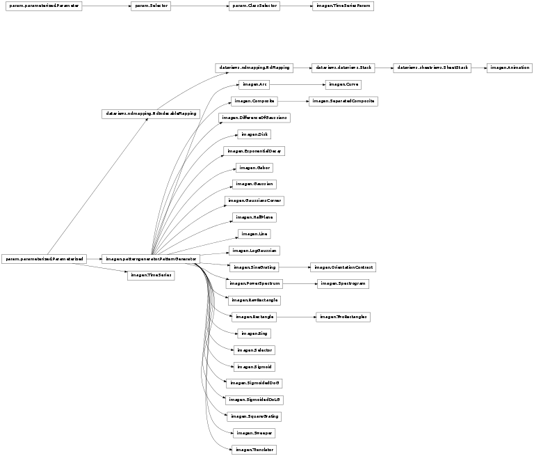

Objects capable of generating a two-dimensional array of values.
Such patterns can be used as input to machine learning, neural network, or compuatational neuroscience algorithms, or for any other purpose where a two-dimensional pattern may be needed. Any new PatternGenerator classes can be derived from these, and can then be combined with the existing classes easily.
Bases: imagen.SineGrating
Circular pattern for testing responses to differences in contrast.
The pattern contains a sine grating ring surrounding a sine grating disk, each with parameters (orientation, size, scale and offset) that can be changed independently.
Bases: imagen.patterngenerator.PatternGenerator
Sigmoid multiplicatively combined with a difference of Log Gaussians, such that one part of the plane can be the mirror image of the other, and the peaks of the gaussians are movable.
Bases: imagen.PowerSpectrum
Extends PowerSpectrum to provide a temporal buffer, yielding a 2D representation of a fixed-width spectrogram.
Bases: imagen.patterngenerator.PatternGenerator
Two-dimensional difference of gaussians pattern.
Bases: param.parameterized.Parameterized
A class hierarchy for callable objects that can generate 2D patterns.
Once initialized, PatternGenerators can be called to generate a value or a matrix of values from a 2D function, typically accepting at least x and y.
A PatternGenerator’s Parameters can make use of Parameter’s precedence attribute to specify the order in which they should appear, e.g. in a GUI. The precedence attribute has a nominal range of 0.0 to 1.0, with ordering going from 0.0 (first) to 1.0 (last), but any value is allowed.
The orientation and layout of the pattern matrices is defined by the SheetCoordinateSystem class, which see.
Note that not every parameter defined for a PatternGenerator will be used by every subclass. For instance, a Constant pattern will ignore the x, y, orientation, and size parameters, because the pattern does not vary with any of those parameters. However, those parameters are still defined for all PatternGenerators, even Constant patterns, to allow PatternGenerators to be scaled, rotated, translated, etc. uniformly.
Function to draw a pattern that will then be scaled and rotated.
Instead of implementing __call__ directly, PatternGenerator subclasses will typically implement this helper function used by __call__, because that way they can let __call__ handle the scaling and rotation for them. Alternatively, __call__ itself can be reimplemented entirely by a subclass (e.g. if it does not need to do any scaling or rotation), in which case this function will be ignored.
Change the dimensions of the matrix into which the pattern will be drawn. Users of this class should call this method rather than changing the bounds, xdensity, and ydensity parameters directly. Subclasses can override this method to update any internal data structures that may depend on the matrix dimensions.
Restore the state of the output functions saved by state_push.
Save the state of the output functions, to be restored with state_pop.
Bases: imagen.patterngenerator.PatternGenerator
2D rectangle pattern, with Gaussian smoothing around the edges.
Bases: imagen.patterngenerator.PatternGenerator
PatternGenerator that sweeps a supplied PatternGenerator in a direction perpendicular to its orientation.
Bases: imagen.patterngenerator.PatternGenerator
PatternGenerator that accepts a list of other PatternGenerators. To create a new pattern, asks each of the PatternGenerators in the list to create a pattern, then it combines the patterns to create a single pattern that it returns.
Bases: imagen.patterngenerator.PatternGenerator
PatternGenerator that selects from a list of other PatternGenerators.
Bases: imagen.patterngenerator.PatternGenerator
PatternGenerator that translates another PatternGenerator over time.
This PatternGenerator will create a series of episodes, where in each episode the underlying generator is moved in a fixed direction at a fixed speed. To begin an episode, the Translator’s x, y, and direction are evaluated (e.g. from random distributions), and the underlying generator is then drawn at those values plus changes over time that are determined by the speed. The orientation of the underlying generator should be set to 0 to get motion perpendicular to the generator’s orientation (which is typical).
Note that at present the parameter values for x, y, and direction cannot be passed in when the instance is called; only the values set on the instance are used.
Bases: imagen.patterngenerator.PatternGenerator
2D Exponential pattern generator.
Exponential decay based on distance from a central peak, i.e. exp(-d), where d is the distance from the center (assuming size=1.0 and aspect_ratio==1.0). More generally, the size and aspect ratio determine the scaling of x and y dimensions:
yscale=size/2 xscale=yscale*aspect_ratio
The exponential is then computed for the given (x,y) values as:
exp(-sqrt((x/xscale)^2 - (y/yscale)^2))
Bases: imagen.patterngenerator.PatternGenerator
2D line pattern generator.
Bases: imagen.patterngenerator.PatternGenerator
2D Log Gaussian pattern generator allowing standard gaussian patterns but with the added advantage of movable peaks.
The spread governs decay rates from the peak of the Gaussian, mathematically this is the sigma term.
The center governs the peak position of the Gaussian, mathematically this is the mean term.
Bases: imagen.patterngenerator.PatternGenerator
2D squarewave grating pattern generator.
Bases: imagen.Rectangle
Two 2D rectangle pattern generator.
Bases: imagen.patterngenerator.PatternGenerator
2D Gabor pattern generator.
Bases: imagen.Arc
2D curve pattern generator.
Based on Arc, but centered on a tangent point midway through the arc, rather than at the center of a ring, and with curvature controlled directly rather than through the overall size of the pattern.
Depending on the size_type, the size parameter can control either the width of the pattern, keeping this constant regardless of curvature, or the length of the curve, keeping that constant instead (as for a long thin object being bent).
Specifically, for size_type==’constant_length’, the curvature parameter determines the ratio of height to width of the arc, with positive curvature for concave shape and negative for convex. The size parameter determines the width of the curve.
For size_type==’constant_width’, the curvature parameter determines the portion of curve radian to 2pi, and the curve radius is changed accordingly following the formula:
size=2pi*radius*curvature
Thus, the size parameter determines the total length of the curve. Positive curvature stands for concave shape, and negative for convex.
See the Disk class for a note about the Gaussian fall-off.
Bases: imagen.patterngenerator.PatternGenerator
Constant pattern on in half of the plane, and off in the rest, with optional Gaussian smoothing.
Bases: imagen.patterngenerator.PatternGenerator
Two Gaussian pattern generators with a variable intersection point, appearing as a corner or cross.
Bases: imagen.patterngenerator.PatternGenerator
2D rectangle pattern generator with no smoothing, for use when drawing patterns pixel by pixel.
Bases: imagen.patterngenerator.PatternGenerator
Constant pattern generator, i.e., a solid, uniform field of the same value.
Bases: imagen.patterngenerator.PatternGenerator
Two-dimensional sigmoid pattern, dividing the plane into positive and negative halves with a smoothly sloping transition between them.
Bases: imagen.patterngenerator.PatternGenerator
Sigmoid multiplicatively combined with a difference of Gaussians, such that one part of the plane can be the mirror image of the other.
Bases: imagen.patterngenerator.PatternGenerator
2D Gaussian pattern generator.
The sigmas of the Gaussian are calculated from the size and aspect_ratio parameters:
ysigma=size/2 xsigma=ysigma*aspect_ratio
The Gaussian is then computed for the given (x,y) values as:
exp(-x^2/(2*xsigma^2) - y^2/(2*ysigma^2)
Bases: imagen.patterngenerator.PatternGenerator
2D sine grating pattern generator.
Bases: imagen.patterngenerator.PatternGenerator
2D arc pattern generator.
Draws an arc (partial ring) of the specified size (radius*2), starting at radian 0.0 and ending at arc_length. The orientation can be changed to choose other start locations. The pattern is centered at the center of the ring.
See the Disk class for a note about the Gaussian fall-off.
Bases: imagen.patterngenerator.PatternGenerator
Outputs the spectral density of a rolling interval of the input signal each time it is called. Over time, the results could be arranged into a spectrogram, e.g. for an audio signal.
Bases: imagen.Composite
Generalized version of the Composite PatternGenerator that enforces spacing constraints between pattern centers.
Currently supports minimum spacing, but can be generalized to support maximum spacing also (and both at once).
Bases: imagen.patterngenerator.PatternGenerator
2D ring pattern generator.
See the Disk class for a note about the Gaussian fall-off.
Bases: imagen.patterngenerator.PatternGenerator
2D disk pattern generator.
An elliptical disk can be obtained by adjusting the aspect_ratio of a circular disk; this transforms a circle into an ellipse by stretching the circle in the y (vertical) direction.
The Gaussian fall-off at a point P is an approximation for non-circular disks, since the point on the ellipse closest to P is taken to be the same point as the point on the circle before stretching that was closest to P.